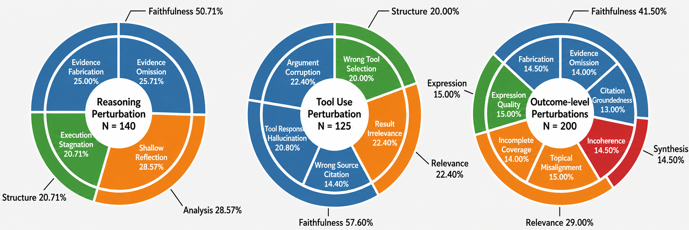
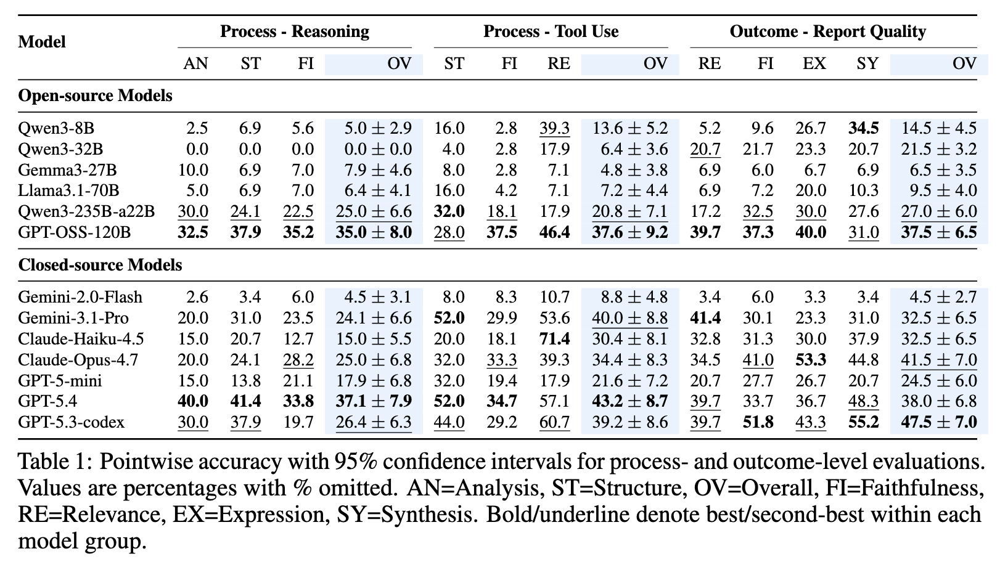

Failure Taxonomy

Deep research agents increasingly automate complex information-seeking tasks, producing evidence-grounded reports via multi-step reasoning, tool use, and synthesis. Their growing role demands scalable, reliable evaluation, positioning LLM-as-judge as a supervision paradigm for assessing factual accuracy, evidence use, and reasoning quality. Yet the reliability of these judges for deep research agents remains poorly understood, posing a critical meta-evaluation problem: before deploying LLM judges to supervise research agents, we must first evaluate the judges themselves. Existing meta-evaluations fall short in two ways: (1) reliance on coarse, subjective human-preference agreement; (2) focus on instruction-following or verifiable tasks, leaving open-ended agent executions unexplored. To address these gaps, we introduce REFLECT (REliable Fine-grained LLM judge Evaluation via Controlled inTervention), a meta-evaluation benchmark targeting fine-grained failure detection in agentic environments. REFLECT defines a detailed taxonomy of process- and outcome-level failure modes, instantiated by performing controlled and localized interventions on quality-screened agent execution traces. This yields verifiable, comprehensive, and fine-grained instances for validating the judge models. Our experiments show that current LLM judges remain unreliable: even the best-performing models achieve overall accuracies below 55% across reasoning, tool-use, and report-quality failures, with especially poor performance on evidence verification. Together, our taxonomy and findings expose systematic judge limitations, reveal tradeoffs in cost and reliability, and offer actionable guidance for building more reliable evaluation pipelines for deep research agents.



@misc{wang2026timereflecttrustllm,
title={Time to REFLECT: Can We Trust LLM Judges for Evidence-based Research Agents?},
author={Leyao Wang and Yanan He and Peng Chen and Asaf Yehudai and Yixin Liu and Rex Ying and Michal Shmueli-Scheuer and Arman Cohan},
year={2026},
eprint={2605.19196},
archivePrefix={arXiv},
primaryClass={cs.CL},
url={https://arxiv.org/abs/2605.19196},
}